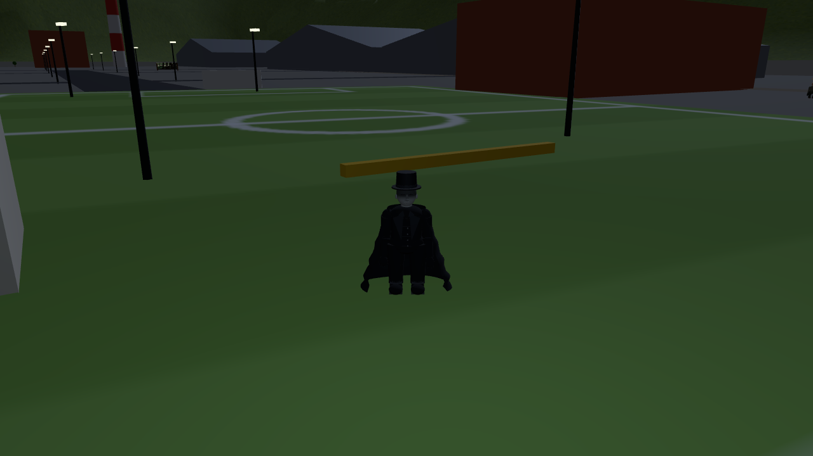
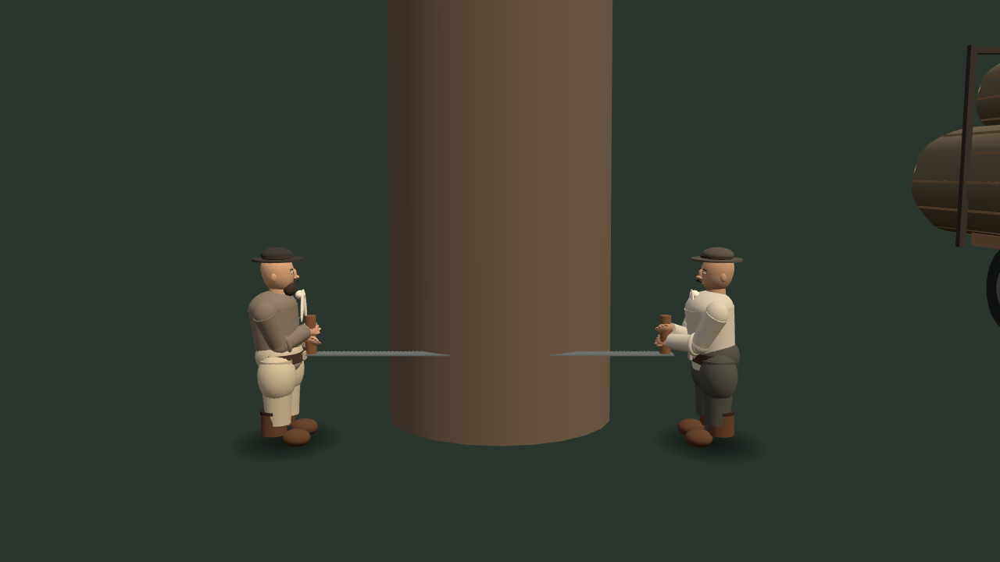

Capturas reais do modelo do jogo. Aparição noturna junto à fábrica em 1950, com cartola, rosto sombreado e capa animada.

Uma pessoa de cada lado do serrote traçador. Corte representado por quatro dias completos no tempo do jogo, com progresso salvo. As localizações das frentes ainda aguardam as coordenadas do usuário.
